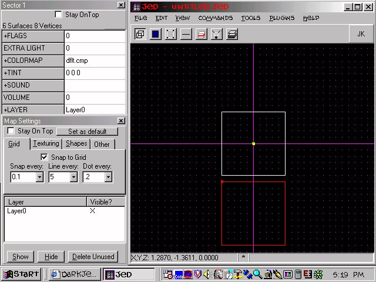
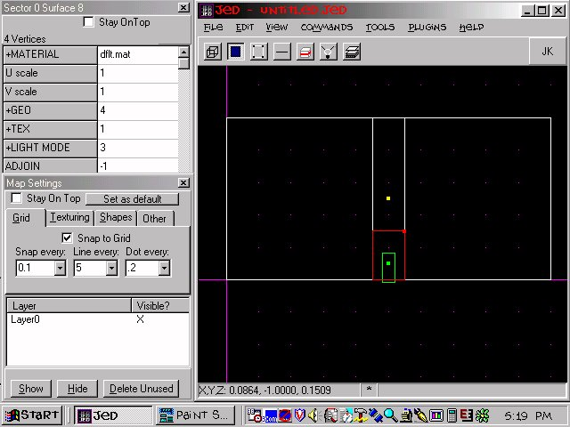
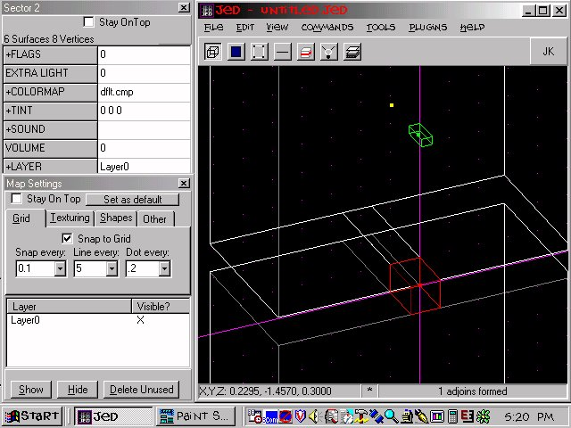
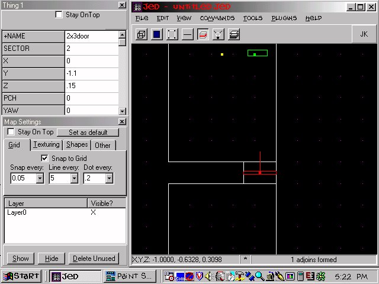
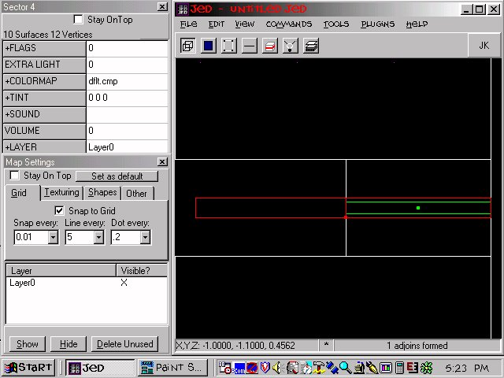
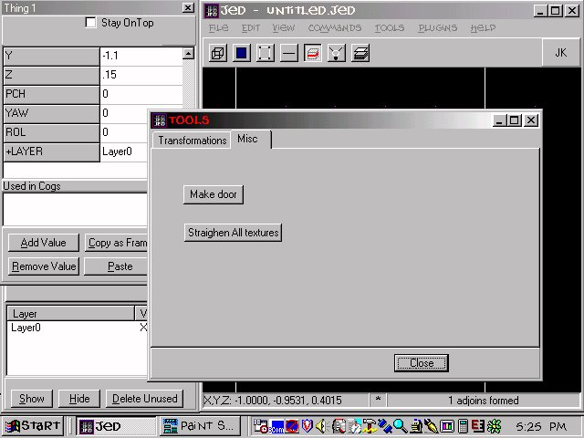

We'll be using the default sector. Before you start though, go to "Tools,
Options, and click on the "misc options" tab. Un-select "move thing frames
when thing moves".. This tutor won't work if you don't do that.
Go to sector mode and press insert.. This will insert a copy of the default
sector.. Place it 0.2 away from sector 0 as the picture shows.

Select one of the two surfaces (one per each sector) that are 0.2 away from
each other.. If you're confused, refer to the above picture. When you have
one selected, go to side view and cleave a 2x3 doorway into it. Do the same
for the surface of the other sector, making sure that in side view, the
cleaves line up. Use a grid step of 0.1 for accuracy.

When both doorways are cleaved, select one and hit "X" to extrude it.. Go
to top view and shorten the extruded sector so that it fits snuggly between
your two main sectors. Adjoin the hallway to both sectors (it should already
be adjoined to the one you extruded from.. adjoin to the opposite sector)and
check the 3d preview to make sure that you adjoined correctly.. You should
be able to see through the hallway from one sector to the other.

Now place a 2x3 door in the middle of the hallway. Check from all angles to
make sure it's fit perfectly into the hallway, it should not be sticking out
of the hallway at all.. If necessary, lower your grid step to 0.05 to get a
bit more manueverability when moving the door around.

Go back to side view and go to sector mode. Using a grid step of 0.01,
cleave out a sector that is barely bigger then the door itself.
Extrude the top surface of this sector and then merge the two sectors. See
the picture if you don't understand. It's crucial that you merge these
two sectors, as doors start doing strange things if they aren't confined
to 1 sector.

Go to thing mode and select the door. Hit F9 to bring up the tools window,
hit the "misc" tab, and click on the "make door" button.. This will add
some new fields to your door (I'll explain them in a second), and add a cog
to "placed cogs"..Close the tool window when you're done.

Still in thing mode, hit "enter" to invoke the thing editor.. If you scroll
down, you'll see new fields. They are:
Thing Flags
These control various things about the door. Don't worry about them
numframes
This is how many frames your door will have. Don't worry about it
frame
These are the coordinates for your frames
To find the coordinates for your frames, simply press the button in the
thing editor that says "copy as frame". Then click on the first "frame" box
and right click with the mouse. Select paste, and voila.. Frame 1 is done.
To get frame 2, go to side view and move the door up as shown in the
picture below. Press "copy as frame" again, and this time paste in the second
frame box. Move the door back to it's original position and you are
done.. Save and test the level, you should have a fully functioning door.